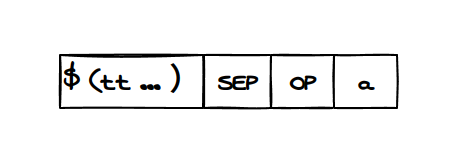
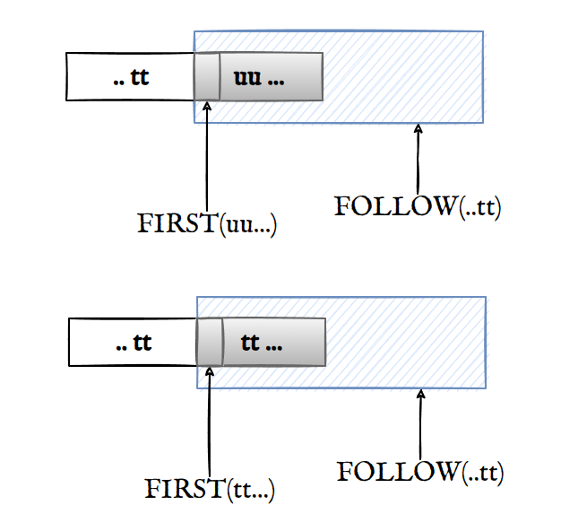
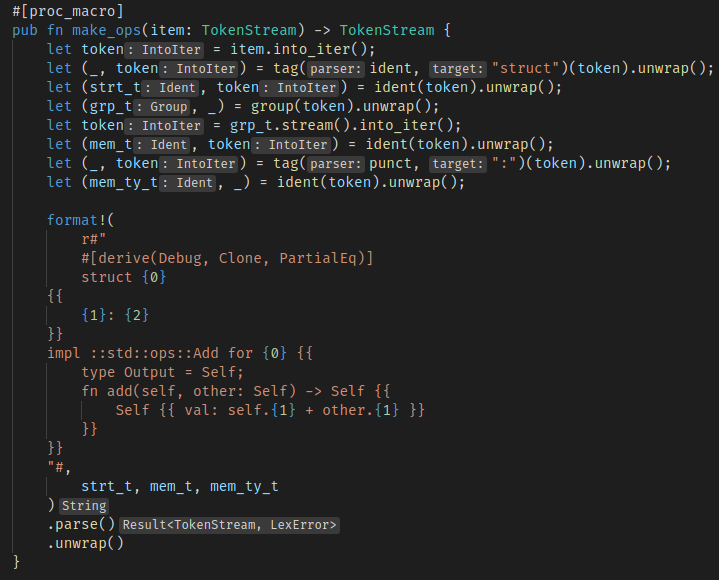
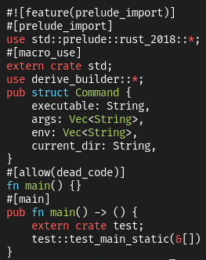
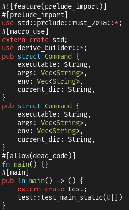
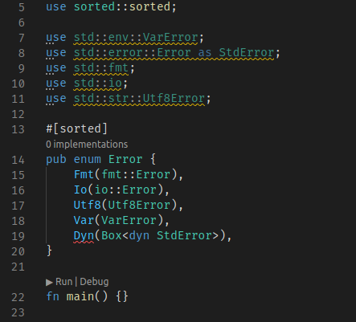
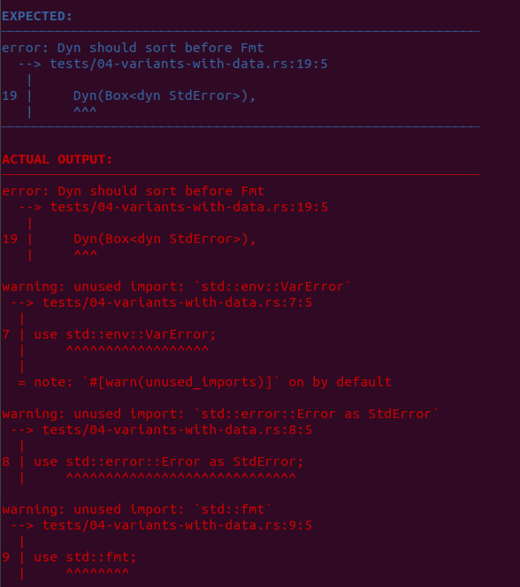
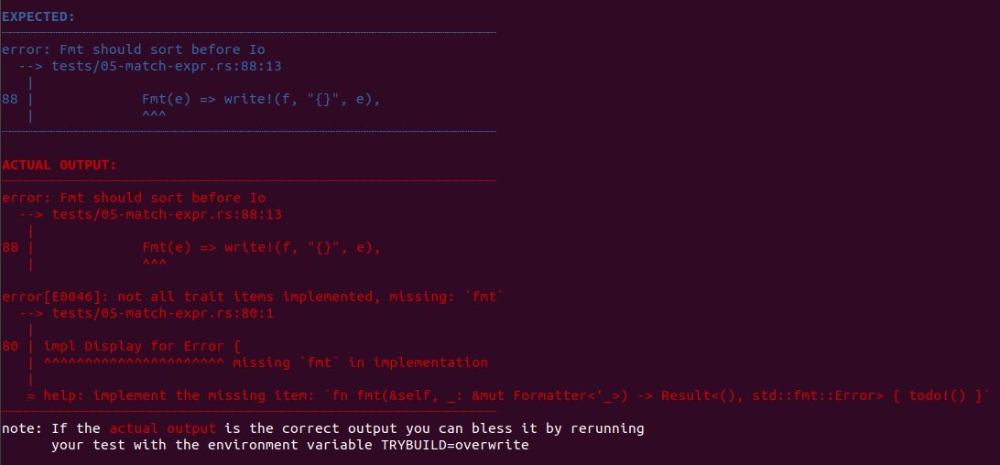
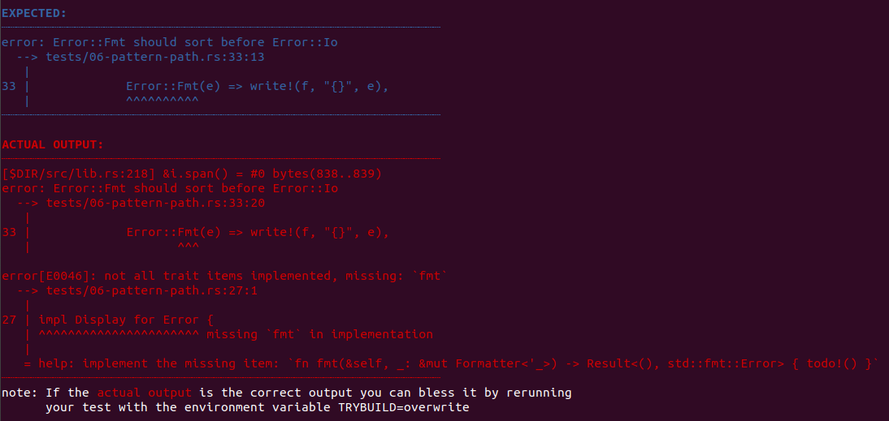
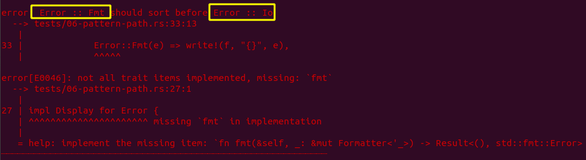

Rust Macros
宏的调用
MacroInvocation :
SimplePath ! DelimTokenTree
DelimTokenTree :
( TokenTree* )
| [ TokenTree* ]
| { TokenTree* }
TokenTree :
Token except delimiters | DelimTokenTree
MacroInvocationSemi :
SimplePath ! ( TokenTree* ) ;
| SimplePath ! [ TokenTree* ] ;
| SimplePath ! { TokenTree* }
语法解读：
MacroInvocation是指宏调用，调用的方法是SimplePath!DelimTokenTree, 比如println!("Hello World"), 其中，println是SimplePath，("Hello world")是DelimTokenTree- Delim = delimiter，看第二条规则，
TokenTree*被包围在(),[]和{}括号中，同时也可以看出"Hello World"是TokenTree vec![1, 2, 3]中1, 2, 3是TokenTreeTokenTree包括 Keywords, Identifiers, Literals, Lifetimes, Punctuation(标点符号，如+-*/;=>)[1], 同时也可推导出DelimToken，形成递归TokenTree 1, 2, 3中,也是树的一部分
- Delim = delimiter，看第二条规则，
MacroInvocationSemi是指需要semicolon（分号) 的MacroInvocation
宏的定义[2]
MacroRulesDefinition :
macro_rules ! IDENTIFIER MacroRulesDef
MacroRulesDef :
( MacroRules ) ;
| [ MacroRules ] ;
| { MacroRules }
MacroRules :
MacroRule ( ; MacroRule )* ;?
MacroRule :
MacroMatcher => MacroTranscriber
MacroMatcher :
( MacroMatch* )
| [ MacroMatch* ]
| { MacroMatch* }
MacroMatch :
Token except $ and delimiters
| MacroMatcher
| $ IDENTIFIER : MacroFragSpec
| $ ( MacroMatch+ ) MacroRepSep? MacroRepOp
MacroFragSpec :
block | expr | ident | item | lifetime | literal
| meta | pat | pat_param | path | stmt | tt | ty | vis
MacroRepSep :
Tokenexcept delimiters and repetition operators
MacroRepOp :
* | + | ?
MacroTranscriber :
DelimTokenTree
对以下宏定义来说：
macro_rules! ambiguity {
($($i:ident)* $j:ident) => { };
}
ambiguity是IDENTIFIER{}是MacroRulesDef($($i:ident)* $j:ident) => { };是MacroRules- 其中
MacroRules是一个MacroRule的 positive closure - 每一个
MacroRule由MacroMatcher和MacroTranscriber组成，前者顾名思义是匹配，Transcriber 意思是 put (thoughts, speech, or data) into written or printed form.)，可见MacroTranscriber是生成的代码模板 MacroMatcher由MacroMatch组成，match expression,match armMacroMatch有几种可能：- 由除
$和分隔符之外的Token组成，在上文我们也已经了解了Token[1:1] 。 MacroMatcher, 递归$ IDENTIFIER: MacroFragSpec$IDENTIFIER表示变量，MacroFragSpec= Macro Fragment Specifier，表示变量的类型：block, expr, ident, item, lifetime, ...ident最容易理解：identifier- 其他类型也是常见语言语法中的术语：block, expression, 以 Lua 语法为例：https://www.lua.org/manual/5.1/manual.html#8
MacroMatch可以以递归形式存在MacroRepSep= Macro Repetition separator, 可以是任何分隔符，这就跟 sed 一样，可以用#和/来分割匹配和替换部分，以s/pattern/substitution为例，第二个就是分隔符。$($i:ident),*中，逗号 comma 是MacroRepSep，分割了多个标识符*是MacroRepOp(Macro Repetition Operator, 包括*,+,?)
- 由除
- meta-variable，又一个术语，是指
$($i:ident),*里的i
例 1: Cargo expand
先下载 https://github.com/dtolnay/cargo-expand， 和 gcc 的 -E 选项一样，输出宏展开之后的代码
macro_rules! m {
{$($i:tt )^*; $($j:tt)|*} => {( $( ($i, $j) ),* )}
}
fn main() {
m!{1^2^3;4|5|6};
m!(1^2^3;4|5|6);
}
输出：
➜ macros git:(master) ✗ cargo expand
#![feature(prelude_import)]
#[prelude_import]
use std::prelude::rust_2018::*;
#[macro_use]
extern crate std;
fn main() {
((1, 4), (2, 5), (3, 6));
((1, 4), (2, 5), (3, 6));
}
- 我在两行
m!调用中用了不同的括号，一个是{}一个是()，二者没有本质区别 - 我用
^作为第一个参数序列的分隔符，|属于第二个序列 tt表示 token, 不用ident是因为没有用到参数或者变量- Transcriber 中，第一个花括号表示输出结果，第二个
()括号对应最外层 tuple 的括号，第三个括号是语法要求的括号，只能是(), 理由看上面的语法，第四个括号原封不动输出, 如果改成[], 结果则是：
#![feature(prelude_import)]
#[prelude_import]
use std::prelude::rust_2018::*;
#[macro_use]
extern crate std;
fn main() {
([1, 4], [2, 5], [3, 6]);
([1, 4], [2, 5], [3, 6]);
}
Textual Scope, Path-Based Scope
Rust 文档有很多术语:
Textual scope
文本作用域，效果和文本的位置有关，比如，你可以多次定义一个宏，但在调用的时候，调的是离调用位置(invocation site)最近的定义。
编译器的实现方面也不难理解，编译的时候，遇到一个符号，将它放入哈希表，在调用符号的时候，查哈希表，取出符号编译，遇到重复的符号，直接将原来的覆盖(shadowing)
the scope of local variables declared with let, 不是 textual scope，那是什么呢？ local scope? Rust 文档是空的：https://doc.rust-lang.org/reference/names/scopes.html，目前最接近的说法是： Scopes of local variables，
用 macro_rules! 定义的宏的作用域从定义之后开始，到 surrounding scope 结束。
Surrounding scope 通常是指一个 module
这也意味着宏的作用域包括 child module, 甚至跨越多个文件，只要那些文件有一样的模块
macro_use
macro_use 是一种属性，属性以 #[] 的形式存在
#[macro_use]
mod inner {
macro_rules! m {
() => {};
}
}
m!();
这一属性的作用是可以扩展宏的作用域，比如上述代码， m! 应该在 inner 之后失效，但是由于 #[macro_use] 被扩展了作用域。
Path-Based Scope
Path 是指 super, crate，如此之类的路径。这和 C++ 命名空间，常规的 module 引用差不多。当你指定宏的具体位置的时候， 你需要在对应的宏定义上标注 #[macro_export], 这会让宏的作用域提升到 crate 程度，超越了它所在 module
mod a {
#[macro_export]
macro_rules! m {
() => {}
}
}
self::m!();
虽然 m! 在 a module 定义，但却被当作 crate 的定义，这就和 static 有点像了。我的理解是，这是一种打破规律的规律。
Hygience
Hygience 是卫生的意思，你要确保宏的定义不污染周边的变量，函数，等，要确保宏使用的变量是准确无误的，那么，宏使用的一切函数，变量，都应该做到 path-based, 除了宏，从上一节可以看出，只要 #[macro_export] 一用，宏就超越了它所在模块，不管是在哪一层。
$crate refers to the current crate, it must be used with a fully qualified module path when referring to non-macro items
Diving Deep
接下来应该看完 https://doc.rust-lang.org/reference/macro-ambiguity.html
Follow-set Ambiguity Restrictions
Follow set 是一个非 Rust 独有的名词：
- https://en.wikipedia.org/wiki/LL_parser#FIRST/FOLLOW_conflict，
- https://cs.adelaide.edu.au/~charles/lt/Lectures/05-DetParser.pdf，
- https://www.jambe.co.nz/UNI/FirstAndFollowSets.html
Given a non-terminal symbol, the next symbol on input should uniquely determine which alternative of the production to choose. These input symbols are called director symbols
比如, 解析 if 和 while 的时候，第一个字母 i 就足够马上否定 while 出现的可能，因此 i 和 w 都是 director symbols
A production alternative can generate a number of terminal strings. The first symbols of those strings are director symbols for that alternative. To this end, we wish to calculate the set of terminal symbols which form the set of first symbols for each non-terminal in the language. – This set of symbols is called the first set.
First Set 是指所有 production alternative 的第一个字母的集合，比如 A ::= B | C, 则 first set 是 B 和 C 的第一个字母
FOLLOW set
For a nonterminal α, FOLLOW (α) contains the
set of words that can occur immediately after α
in a sentence. -- Engineering A Compiler
对于 nonterminal a, Follow(a) 包含了所有 a 之后紧跟着 a 出现的 words。比如
S -> AB
A -> 1
B -> 2
那么 Follow(A) 为 {2}
仔细阅读这篇难度极高的文档： https://doc.rust-lang.org/reference/macro-ambiguity.html#first-and-follow-informally
这里以 FIRST SET 为例，假设 Match (记为 M )的结果为

$(tt...) 有两种可能:
- 一种是只有一个 simple NT(Rust 术语, simple non-terminal)，按规定无论如何必须不能为空，因此
First(M) = First(tt...) - 一种是 complex NT, 按照定义是可能是
*,+,?closure，那也就可能为空，如果不为空，First set 保持为First(tt...)， 如果为空，那么结果就不在$(tt...)中寻找，跳到了SEP, 如果SEP不为空，那 First set 必然包含SEP - 如果恰好
SEP为空，就轮到 a，如果 OP 是*/?, 说明前面可能什么都没有，那么 First set 必须包含 First(a), 如果 OP 是+, 说明前面肯定有东西（如果不看 https://doc.rust-lang.org/reference/macro-ambiguity.html#the-matcher-invariants 的第三条规则就无法解释，这规则说的是，当 SEP 为空的时候，如果 OP =*或者+, 那么，FOLLOW(tt ...)) 必须包含FIRST(tt...), 意思是tt...的头部必须可以将两个tt...区分开来

第一个图描述的是 first invariant, 第二个图 third invariant
Last set 也是如此类推. 现在来看 FOLLOW set：https://doc.rust-lang.org/reference/macro-ambiguity.html#followm
可以看到 FOLLOW(expr) = FOLLOW(stmt) = {=>, , , ;}, 这没什么好纠结的，规定就是规定。
现在看 ($ty:ty < foo ,) 是否合法：
- FOLLOW(ty) = FOLLOW(path) = {
{,[,,,=>,:,=,>,>>,;,|,as,where, block nonterminals}，不包含<， 因此不合法
回到 Rust，文档举了一个例子，一个 macro match, $i: expr[,]，Rust
担心 [ 会触发 trailing expression
trailing expression:
return <expr>可以写出<expr>, 后者就叫做 trailing expression
为什么会触发？文档没写，但它说 $i:expr, 和 $i:expr 都行，这是因为 , 和 ; 是表达式的分隔符，没错。[ 怎么就不行了？ 因为 f()[<expr>;<expr>;expr]？
其中， f() 返回一个 &[] 或 &Vec<T>。就算是这样，怎么就不允许 [,]？
考虑：
f()[1;2;3] = 2; f2();
对于 $i: expr, 匹配到 f() 的时候， parser 还需要继续往下看一眼(look ahead)，是否该终止，分隔符是 [,] 但, 不是合法的 expression。 Rust 文档到这给出的理由就很牵强，[,] 理论上没问题，但是可能在未来会有问题，所以干脆就禁止使用。
过时的写法
在 The Little Book of Rust Macros >> Internal rules 可以看到这种写法
#[macro_export]
macro_rules! foo {
(@as_expr $e:expr) => {$e};
($($tts:tt)*) => {
foo!(@as_expr $($tts)*)
};
}
但在 https://doc.rust-lang.org/reference/macros-by-example.html 的语法定义中没有体现出来，因此不做了解，SO 有个答案说这不是现代 Rust。现代 Rust 鼓励创建另一个 macro 而不是在宏内部定义一个 internal rules.
例 2： 定义函数
在进入下一个主题之前，看 declarative macro 能不能定义函数：
macro_rules! def {
() => {
fn f() {
println!("Hello World!");
}
}
}
def!();
fn main() {
f();
}
结果表明这代码可以运行
例 3： 重载运算符
macro_rules! defop {
($s: ident, $t: ident, $f: ident) => {
impl ops::$t<$s> for $s {
type Output = $s;
fn $f(self, _rhs: $s) -> $s {
$s {
val: std::ops::$t::$f(self.val, _rhs.val),
}
}
}
};
}
defop!(Foo, Add, add);
defop!(Foo, Sub, sub);
defop!(Foo, Mul, mul);
defop!(Foo, Div, div);
例 4： 递归
#[macro_export]
macro_rules! debug {
(@print $a:expr)=>{
{
eprintln!("{}::{}::{}: {:#?}", file!(), line!(), stringify!($a), $a);
}
};
[$a:expr]=>{
{
$crate::debug!(@print $a);
}
};
[$a:expr,$b:expr]=> {
{
$crate::debug!(@print $a);
$crate::debug!(@print $b);
}
};
[$a:expr,$($b:tt)*]=>{
{
$crate::debug!($a);
$crate::debug!($($b)*);
}
};
}
fn main(){
let a = 1;
let b = "tiempo";
let c = 1.23;
debug![a, b, c];
debug!(45, 6.78);
}
这么写是为了模仿 TT Muncher, 递归写法
例 5: concat, stringify
macro_rules! make_color {
($color: literal) => {
concat!("\x1b[", $color, "m{}\x1b[0m");
};
}
Bad News
Declarative Macros with
macro_rules!for General Metaprogramming :There are some strange edge cases with
macro_rules!. In the future, Rust will have a second kind of declarative macro that will work in a similar fashion but fix some of these edge cases. After that update,macro_rules!will be effectively deprecated.
但如果新的声明式宏只是定义关键字不一样，思想差不多的话，那也不用担心现在关于声明式宏的知识会失效，也就 yet_another_macro_rules! 和 macro_rules! 的区别。
Procedural Macros
先看 https://doc.rust-lang.org/reference/procedural-macros.html
过程宏应该是 the king of Rust Macros, 也是我们的重点, 因为只需要加一个 #[derive(XXX)] 就能替代例 3 的 4 个 defop!.
You can sort of think of procedural macros as functions from an AST to another AST.
即将 AST 转化成另一个 AST。
在已有的二进制项目中创建一个新的库项目：
cargo init proc --lib
在二进制的 Cargo.toml 加上
[lib]
proc-macro = true
意思是编译的时候链接 proc-macro crate
在当前二进制项目 Cargo.toml 加上两行引用指令，如下所示：
[lib]
proc-macro = true
name = "proc"
path = "proc/src/lib.rs"
确保能编译。
我们已经知道 Token 如何被 parse 成 AST，AST 再被编译器翻译成汇编或者机器码，proc-macro 接口提供了 TokenStream , 让你在 Rust 的 parser 之前先动手，某种程度上可以理解为 Rust 给我们设置了 parse 的钩子。
Function-like Macros
https://doc.rust-lang.org/book/ch19-06-macros.html#function-like-macros
Similarly tomacro_rules!macros, they’re more flexible than functions; for example, they can take an unknown number of arguments.
可以接受无数参数，这是函数宏相比函数的优点。和 macro_rules! 的区别就是后者只能用 match-like syntax。有道理，当你定义 macro_rules! 的时候，每一个 match 的类型都需要考虑，不像 C 的宏，宏参数是纯字符串。Rust 声明式宏根本不识别单独的 +，
接下来我要做的事情，是将 struct Foo { val: i32 } 实现运算符重载，和例 3 一样。这个例子并不是那么恰当，官方文档给出的例子 let sql = sql!(SELECT * FROM posts WHERE id=1); 才是最像样的用法。我提到的应用场景应该用 attribute macro，但说实话，这些无所谓，知道怎么解析才是最重要的。
make_ops!(struct Foo { val: i32 });
在定义中加上一行 dbg!(_item); 就能打印出 token stream：
#[proc_macro]
pub fn make_ops(_item: TokenStream) -> TokenStream {
dbg!(_item);
"fn ops() -> u32 { 42 }".parse().unwrap()
}
打印：
[proc/src/lib.rs:7] _item = TokenStream [
Ident {
ident: "struct",
span: #0 bytes(16..22),
},
Ident {
ident: "Foo",
span: #0 bytes(23..26),
},
Group {
delimiter: Brace,
stream: TokenStream [
Ident {
ident: "val",
span: #0 bytes(29..32),
},
Punct {
ch: ':',
spacing: Alone,
span: #0 bytes(32..33),
},
Ident {
ident: "i32",
span: #0 bytes(34..37),
},
],
span: #0 bytes(27..38),
},
]
这时候我们非常需要一个像 nom 一样的库来救场，但这也是一个很好的练习，应该先自己尝试实现。
相关文档：
最终：proc/src/lib.rs
extern crate proc_macro;
use anyhow::{bail, Result};
use proc_macro::{token_stream::IntoIter, Group, Ident, Punct, TokenStream, TokenTree};
macro_rules! make_parser {
($T: ty, $V: ident, $f:ident) => {
fn $f(mut token: IntoIter) -> Result<($T, IntoIter)> {
let x = token.next().unwrap();
match x {
TokenTree::$V(y) => Ok((y, token)),
_ => bail!("Expect TokenTree::$T"),
}
}
};
}
make_parser!(Ident, Ident, ident);
make_parser!(Group, Group, group);
make_parser!(Punct, Punct, punct);
fn tag<'a, T, P>(
mut parser: P,
target: &'a str,
) -> impl FnMut(IntoIter) -> Result<(T, IntoIter)> + 'a
where
P: FnMut(IntoIter) -> Result<(T, IntoIter)> + 'a,
T: ToString,
{
move |token: IntoIter| -> Result<(T, IntoIter)> {
let (m, token) = parser(token)?;
if m.to_string() == target {
Ok((m, token))
} else {
bail!("tag mismatch")
}
}
}
最后一段代码不知道为什么竟然造成 markdown 渲染失败，只能贴图

测试：src/main.rs
proc::make_ops!(
struct Foo {
val: i32,
}
);
fn main() {
let a = Foo { val: 1 };
let b = Foo { val: 2 };
assert_eq!(a + b, Foo { val: 3 })
}
可以看出 proc::make_ops!() 成功给 Foo 加上了一个 + 操作函数，可能看起来没什么，但实现起来非常难，我推荐各位自己动手写一个。这个例子证明我们完全可以徒手操作 TokenStream。
附：为什么要用 unwrap() ？ 因为不能用 ?，也可以用 expect()。在 the book 找到了一个理论支持：
You might have noticed that we’re calling
unwrapto cause thehello_macro_derivefunction to panic if the call to thesyn::parsefunction fails here. It’s necessary for our procedural macro to panic on errors becauseproc_macro_derivefunctions must returnTokenStreamrather thanResultto conform to the procedural macro API (https://doc.rust-lang.org/book/ch19-06-macros.html#how-to-write-a-custom-derive-macro)
syn
The book >> How to Write a Custom derive Macro 提到一个库 : syn
We’ll also need functionality from the syn and quote crates, as you’ll see in a moment, so we need to add them as dependencies
在上一节可以看到如何自己实现 parsing，现在使用 syn 和 quote，第三方库。和自己手写不一样，自己手写用 proc_macro，syn 用 proc_macro2, 从文档来看，可以看出 proc_macro2 mixin 了 proc_macro，前者是后者的适配器。
Syn 是一群 parser 的集合，将字符串转化成 AST, quote 将 AST 转化成 Rust 代码。
Derive Macros
其实还是把 https://github.com/dtolnay/proc-macro-workshop 的习题全做了比较妥当。以下篇幅记录每一步过程。
已知，宏只能在 library 中定义，在 library 的 Cargo.toml 中，首先标记这个库用到 proc_macro
[lib]
proc-macro = true
创建测试，执行 cargo test 的时候用到
[[test]]
name = "tests"
path = "tests/progress.rs"
创建目录 tests, 创建 progress.rs
#[test]
fn tests() {
let t = trybuild::TestCases::new();
t.pass("tests/01-parse.rs");
}
这里面用了 trybuild crate，只需知道它是用来测试编译的，用法照葫芦画瓢就好
Builder Step 1 Parse
第一个测试，可以看出 Derive macro 是个什么形式： #[derive(X)]
use derive_builder::*;
#[derive(Builder)]
pub struct Command {
executable: String,
args: Vec<String>,
env: Vec<String>,
current_dir: String,
}
fn main() {}
要实现 #[derive(Builder)], 最起码让它编译通过，最基本的要素如下：
use proc_macro::TokenStream;
use quote::quote;
use syn::{parse_macro_input, DeriveInput};
#[proc_macro_derive(Builder)]
pub fn derive(input: TokenStream) -> TokenStream {
let _ = parse_macro_input!(input as DeriveInput);
let expanded = quote! {};
TokenStream::from(expanded)
}
展开：

如果是这样则编译失败
#[proc_macro_derive(Builder)]
pub fn derive(input: TokenStream) -> TokenStream {
input
}
展开之后可以看出 Command 定义了两次，为什么会这样呢？很容易理解，加了 #[derive(X)] 之后，产生的代码是追加，而不是覆盖。证据：https://github.com/dtolnay/proc-macro-workshop/blob/0e90cf2551e42f85620aca092b4255fa1bd10660/sorted/tests/01-parse-enum.rs#L5

展开的步骤有些麻烦，首先在 Cargo.toml 修改 [[test]] 如下
[[test]]
name = "tests"
path = "tests/01-parse.rs"
[[test]]
name = "progress"
path = "tests/progress.rs"
执行：
cargo expand --test tests
测试 1 通过, 用这条指令测试全部测试
cargo test --test progress
Builder Step 2 Create Builder
第二步让我们用宏生成出以下代码：
impl Command {
pub fn builder() -> CommandBuilder {
CommandBuilder {
executable: None,
args: None,
env: None,
current_dir: None,
}
}
}
加一个 dbg!() 可以打印出 DeriveInput 结果，根据这个结构，像爬虫那样抓取各元素
#[proc_macro_derive(Builder)]
pub fn derive(input: TokenStream) -> TokenStream {
let input = parse_macro_input!(input as DeriveInput);
dbg!(input);
...
}
可以看到 DeriveInput 的结构 https://docs.rs/syn/latest/syn/struct.DeriveInput.html：
pub struct DeriveInput {
pub attrs: Vec<Attribute>,
pub vis: Visibility,
pub ident: Ident,
pub generics: Generics,
pub data: Data,
}
其中，attrs 为空，因为没有属性，vis 为 pub, ident 为 Command， generics 为空，因为没有泛型，Data 是一个枚举 https://docs.rs/syn/latest/syn/enum.Data.html :
废话少说：先实现空的 builder 函数：
#[proc_macro_derive(Builder)]
pub fn derive(input: TokenStream) -> TokenStream {
let input = parse_macro_input!(input as DeriveInput);
let vis = input.vis;
let head = input.ident;
let builder = quote! {
impl #head {
#vis fn builder() {
}
}
};
TokenStream::from(builder)
}
#variable 可能是一种泛型操作符，不管是 Ident 还是 Public.
编译通过，现在要填充实现，初始化每一个 field (不用 member 称呼，就很有意思，原因有待考究 #todo)
加一个 type alias 区分 proc_macro 和 proc_macro2
type TokenStream1 = proc_macro::TokenStream;
type TokenStream2 = proc_macro2::TokenStream;
代码改成：
#[proc_macro_derive(Builder)]
pub fn derive(input: TokenStream1) -> TokenStream1 {
let input = parse_macro_input!(input as DeriveInput);
let vis = input.vis;
let head = input.ident;
let _generics = input.generics;
let data = input.data;
let builder_name = Ident::new(
&(String::from(&head.to_string()) + "Builder"),
Span::call_site(),
);
let data = data_struct(data).unwrap();
let (fields_declarer, fields_initializer) = fields(data).unwrap();
let builder = quote! {
pub struct #builder_name {
#fields_declarer
}
impl #head {
#vis fn builder() -> #builder_name
{
#builder_name {
#fields_initializer
}
}
}
};
TokenStream1::from(builder)
}
其中两个 parser 的定义为：
fn data_struct(data: Data) -> Result<DataStruct> {
match data {
Data::Struct(d) => Ok(d),
_ => bail!("Expect Data::Struct"),
}
}
fn fields(data: DataStruct) -> Result<(TokenStream2, TokenStream2)> {
let mut fields_declarer = quote! {};
let mut fields_initializer = quote! {};
for field in data.fields {
let ident = field.ident;
let ty = field.ty;
fields_declarer = quote! {
#fields_declarer
#ident: Option<#ty>,
};
fields_initializer = quote! {
#fields_initializer
#ident: None,
};
}
Ok((fields_declarer, fields_initializer))
}
可以看出，这只是简单的 quote!{} 拼装。
Builder Step 3 Call Setters
这一步要求创建 setters，很简单：
fn fields(data: DataStruct) -> Result<(TokenStream2, TokenStream2, TokenStream2)> {
let mut fields_declarer = quote! {};
let mut fields_initializer = quote! {};
let mut fields_setter = quote! {};
for field in data.fields {
let ident = field.ident;
let ty = field.ty;
fields_declarer = quote! {
#fields_declarer
#ident: Option<#ty>,
};
fields_initializer = quote! {
#fields_initializer
#ident: None,
};
fields_setter = quote! {
#fields_setter
fn #ident(&mut self, #ident: #ty) -> &mut Self {
self.#ident = Some(#ident);
self
}
};
}
Ok((fields_declarer, fields_initializer, fields_setter))
}
Builder Step 4 Call Build
给 CommandBuilder 增加一个生成接口：
impl CommandBuilder {
pub fn build(&mut self) -> Result<Command, Box<dyn Error>> {
...
}
}
到这就得取消函数封装，不然就要 OOP：
#[proc_macro_derive(Builder)]
pub fn derive(input: TokenStream1) -> TokenStream1 {
let input = parse_macro_input!(input as DeriveInput);
let vis = input.vis;
let head = input.ident;
let _generics = input.generics;
let data = input.data;
let builder = Ident::new(
&(String::from(&head.to_string()) + "Builder"),
Span::call_site(),
);
let data = data_struct(data).unwrap();
let mut fields_declarer = quote! {};
let mut fields_initializer = quote! {};
let mut fields_setter = quote! {};
let mut fields_copy = quote! {};
for field in data.fields {
let ident = field.ident;
let ty = field.ty;
fields_declarer = quote! {
#fields_declarer
#ident: Option<#ty>,
};
fields_initializer = quote! {
#fields_initializer
#ident: None,
};
fields_setter = quote! {
#fields_setter
fn #ident(&mut self, #ident: #ty) -> &mut Self {
self.#ident = Some(#ident);
self
}
};
fields_copy = quote! {
#fields_copy
#ident: self.#ident.clone().expect("Field is None"),
};
}
let build_func = quote! {
pub fn build(&mut self) -> Result<#head, Box<dyn std::error::Error>> {
Ok(#head {
#fields_copy
})
}
};
TokenStream1::from(quote! {
pub struct #builder {
#fields_declarer
}
impl #head {
#vis fn builder() -> #builder
{
#builder {
#fields_initializer
}
}
}
impl #builder {
#fields_setter
#build_func
}
})
}
Builder Step 5 Method Chaining
let command = Command::builder()
.executable("cargo".to_owned())
.args(vec!["build".to_owned(), "--release".to_owned()])
.env(vec![])
.current_dir("..".to_owned())
.build()
.unwrap();
要实现这样的效果，但第 4 步已经把它实现了
Builder Step 6 Optional Fields
这一步需要识别 Option<T> 的域
#[derive(Builder)]
pub struct Command {
executable: String,
args: Vec<String>,
env: Vec<String>,
current_dir: Option<String>,
}
这里有个问题，就是你无法分辨 Option<T> and std::option::Option<T> and <Vec<Option<T>> as IntoIterator>::Item
As a consequence, it isn't possible in general for a macro to compare two token representations and tell whether they refer to the same type.
这个练习只要求我们识别 Option<T> , 不用考虑其等效形式。
解法并不复杂：
for field in data.fields {
let ident = field.ident;
let ty = field.ty;
let (is_option, wrapped_id) = is_option(&ty);
let mut alt_decl = quote! { Option<#ty> };
let mut alt_sett = quote! { #ty };
let mut alt_copy = quote! { .expect("Field is None") };
if is_option {
alt_decl = quote! { #ty };
alt_sett = quote! { #wrapped_id };
alt_copy = quote! {};
}
fields_declarer = quote! {
#fields_declarer
#ident: #alt_decl,
};
fields_setter = quote! {
#fields_setter
fn #ident(&mut self, #ident: #alt_sett) -> &mut Self {
self.#ident = Some(#ident);
self
}
};
fields_copy = quote! {
#fields_copy
#ident: self.#ident.clone()#alt_copy,
};
fields_initializer = quote! {
#fields_initializer
#ident: None,
};
}
定义两个 parser:
fn path_segment_from_type(ty: &Type) -> Result<&PathSegment, Box<dyn Error>> {
if let Type::Path(tp) = ty {
let segs = &tp.path.segments;
if segs.len() == 1 {
return Ok(segs.first().unwrap());
}
}
Err(Box::new(StupidError {
str: "Expect Data::Struct".to_owned(),
}))
}
fn is_option(ty: &Type) -> (bool, Option<&Ident>) {
if let Ok(sg) = path_segment_from_type(ty) {
dbg!(&sg.ident);
if sg.ident == "Option" {
if let PathArguments::AngleBracketed(args) = &sg.arguments {
let args = &args.args;
if args.len() == 1 {
if let Some(GenericArgument::Type(ty)) = args.first() {
if let Ok(sg) = path_segment_from_type(ty) {
return (true, Some(&sg.ident));
}
}
}
}
}
}
(false, None)
}
Builder Step 7 Repeated Field
意思是，对于 args: Vec<String> 这样的域，提供一个 fn arg(String) 接口
#[derive(Builder)]
pub struct Command {
executable: String,
#[builder(each = "arg")]
args: Vec<String>,
#[builder(each = "env")]
env: Vec<String>,
current_dir: Option<String>,
}
为了让编译知道 #[builder(each = "arg")] 和 Builder 宏有关，必须采用这样的标注：
#[proc_macro_derive(Builder, attributes(builder))]
这里的 builder 又被称作 inert attributes(lacking the ability or strength to move.)
入手点: https://docs.rs/syn/1.0.89/syn/struct.Attribute.html#parsing-from-tokens-to-attribute
然后通过 dbg!() 查看结构：可以看到
attrs: [
Attribute {
pound_token: Pound,
style: Outer,
bracket_token: Bracket,
path: Path {
leading_colon: None,
segments: [
PathSegment {
ident: Ident {
ident: "builder",
span: #0 bytes(1462..1469),
},
arguments: None,
},
],
},
tokens: TokenStream [
Group {
delimiter: Parenthesis,
stream: TokenStream [
Ident {
ident: "each",
span: #0 bytes(1470..1474),
},
Punct {
ch: '=',
spacing: Alone,
span: #0 bytes(1475..1476),
},
Literal {
kind: Str,
symbol: "arg",
suffix: None,
span: #0 bytes(1477..1482),
},
],
span: #0 bytes(1469..1483),
},
],
},
],
可以写个函数把关键的 Literal 抽取出来, 可以看到，这种写法非常恶心，不知道有没有更好的方式
fn builder_attribute(field: &Field) -> (bool, Option<Literal>) {
let attrs = &field.attrs;
if attrs.len() == 1 {
let attr = attrs.first().unwrap();
let segs = &attr.path.segments;
if segs.len() == 1 && segs[0].ident == "builder" {
let mut tokens = attr.tokens.clone().into_iter();
let token = tokens.next().unwrap();
if let TokenTree::Group(grp) = token {
let mut tokens = grp.stream().into_iter();
let ident = tokens.next().unwrap();
let punct = tokens.next().unwrap();
if ident.to_string() == "builder" && punct.to_string() == "=" {
let literal = tokens.next().unwrap();
if let TokenTree::Literal(literal) = literal {
return (true, Some(literal));
}
}
}
}
}
(false, None)
}
这里需要注意的是 Literal 类型的字符串提取出来居然带双引号
[builder/src/lib.rs:141] e.to_owned() = Literal {
kind: Str,
symbol: "env",
suffix: None,
span: #0 bytes(1529..1534),
}
关键部分：
if is_repeated {
let (_, inner) = wrapped_type(ty, "Vec");
let e = each.unwrap();
let each = Ident::new(
&e.to_string()[1..e.to_string().len() - 1],
Span::call_site(),
);
let inner = inner.unwrap();
fields_setter = quote! {
#fields_setter
fn #each(&mut self, #each: #inner) -> &mut Self {
if self.#ident.is_none() {
self.#ident = Some(Vec::new());
} else {
self.#ident.as_mut().unwrap().push(#each);
}
self
}
};
} else {
fields_setter = quote! {
#fields_setter
fn #ident(&mut self, #ident: #alt_sett) -> &mut Self {
self.#ident = Some(#ident);
self
}
};
}
Builder Step 8 Unrecognized Attribute
#[derive(Builder)]
pub struct Command {
executable: String,
#[builder(eac = "arg")]
args: Vec<String>,
env: Vec<String>,
current_dir: Option<String>,
}
这一节的目的是让编译出现错误的时候，发出 compile_error。这么一来需要将 std::result::Result 换成 syn::Result，这一节就要对代码大换血
篇幅有限，只能展示如何使用 syn::Error
fn builder_attribute(field: &Field) -> Result<(bool, Option<Literal>)> {
let attrs = &field.attrs;
if attrs.len() == 1 {
let attr = attrs.first().unwrap();
let segs = &attr.path.segments;
if segs.len() == 1 && segs[0].ident == "builder" {
let mut tokens = attr.tokens.clone().into_iter();
let token = tokens.next().unwrap();
if let TokenTree::Group(grp) = token {
let mut tokens = grp.stream().into_iter();
let ident = tokens.next().unwrap();
let punct = tokens.next().unwrap();
if ident.to_string() == "each" {
if punct.to_string() == "=" {
let literal = tokens.next().unwrap();
if let TokenTree::Literal(literal) = literal {
return Ok((true, Some(literal)));
}
}
} else {
return Err(Error::new(
grp.span(),
"expected `builder(each = \"...\")`".to_string(),
));
}
}
}
}
Ok((false, None))
}
另外主函数被拆分为：
#[proc_macro_derive(Builder, attributes(builder))]
pub fn derive(input: TokenStream1) -> TokenStream1 {
let input = parse_macro_input!(input as DeriveInput);
builder_deriver(input)
.unwrap_or_else(syn::Error::into_compile_error)
.into()
}
Builder Step 9 Redifined Prelude Type
这一节主要考究卫生(Hygience)的问题
type Option = ();
type Some = ();
type None = ();
type Result = ();
type Box = ();
这就需要在宏定义上标注好绝对路径, 比如：
self.#ident = ::std::option::Option::Some(::std::vec::Vec::new());
完成
test 01-parse.rs [should pass] ... ok
test 02-create-builder.rs [should pass] ... ok
test 03-call-setters.rs [should pass] ... ok
test 04-call-build.rs [should pass] ... ok
test 05-method-chaining.rs [should pass] ... ok
test 06-optional-field.rs [should pass] ... ok
test 07-repeated-field.rs [should pass] ... ok
test 08-unrecognized-attribute.rs [should fail to compile] ... ok
test 09-redefined-prelude-types.rs [should pass] ... ok
Attribute-like Macros
最后一种宏，依然是通过练习的方式熟悉，根据作者推荐选 https://github.com/dtolnay/proc-macro-workshop#attribute-macro-sorted
准备好 Cargo.toml
[[test]]
name = "progress"
path = "tests/progress.rs"
[[test]]
name = "test"
path = "tests/01-parse-enum.rs"
#path = "tests/02-not-enum.rs"
#path = "tests/02-not-enum.stderr"
#path = "tests/03-out-of-order.rs"
#path = "tests/03-out-of-order.stderr"
#path = "tests/04-variants-with-data.rs"
#path = "tests/04-variants-with-data.stderr"
#path = "tests/05-match-expr.rs"
#path = "tests/05-match-expr.stderr"
#path = "tests/06-pattern-path.rs"
#path = "tests/06-pattern-path.stderr"
#path = "tests/07-unrecognized-pattern.rs"
#path = "tests/07-unrecognized-pattern.stderr"
#path = "tests/08-underscore.rs"
#path = "tests/progress.rs"
Sorted 01 Parse Enum
把 Builder 项目的一些 boilerplate 搬过来：
-use proc_macro::TokenStream;
+use proc_macro2::{Ident, Literal, Span, TokenTree};
+use quote::quote;
+use syn::spanned::Spanned;
+use syn::{
+ parse_macro_input, Data, DataStruct, DeriveInput, Field, GenericArgument, PathArguments,
+ PathSegment, Type,
+};
+use syn::{Error, Result};
+
+type TokenStream1 = proc_macro::TokenStream;
+type TokenStream2 = proc_macro2::TokenStream;
#[proc_macro_attribute]
-pub fn sorted(args: TokenStream, input: TokenStream) -> TokenStream {
- let _ = args;
- let _ = input;
+pub fn sorted(args: TokenStream1, input: TokenStream1) -> TokenStream1 {
+ let input = parse_macro_input!(input as DeriveInput);
+ sorted_deriver(input)
+ .unwrap_or_else(syn::Error::into_compile_error)
+ .into()
+}
- unimplemented!()
+fn sorted_deriver(input: DeriveInput) -> Result<TokenStream2> {
+ let _ = input;
+ Ok(quote! {
+
+ })
改成这样就能通过测试，cargo expand --test test 一看发现标注的结构体消失了，这是因为 attribute macros 可以修改或者删除 attribute 下的 input：https://github.com/dtolnay/proc-macro-workshop/blob/0e90cf2551e42f85620aca092b4255fa1bd10660/sorted/tests/01-parse-enum.rs#L5
作者推荐我们将 input 解析成 syn::Item，so be it:
#[proc_macro_attribute]
pub fn sorted(args: TokenStream1, input: TokenStream1) -> TokenStream1 {
dbg!(args);
let input = parse_macro_input!(input as Item);
sorted_deriver(input)
.unwrap_or_else(syn::Error::into_compile_error)
.into()
}
fn sorted_deriver(input: Item) -> Result<TokenStream2> {
Ok(quote! {
#input
})
}
其中 args 是 #[sorted(a)] 中的 a, 打印出来是：
[sorted/src/lib.rs:15] args = TokenStream [
Ident {
ident: "a",
span: #0 bytes(1547..1548),
},
]
Sorted 02 Not Enum
如果 sorted 不是加在 Enum 上，则报错。
#[proc_macro_attribute]
pub fn sorted(_args: TokenStream1, input: TokenStream1) -> TokenStream1 {
let input = parse_macro_input!(input as Item);
sorted_deriver(input)
.unwrap_or_else(syn::Error::into_compile_error)
.into()
}
fn sorted_deriver(input: Item) -> Result<TokenStream2> {
match input {
Item::Enum(e) => sorted_enum_deriver_impl(e),
_ => {
Err(Error::new(
Span::call_site(),
"expected enum or match expression",
))
},
}
}
fn sorted_enum_deriver_impl(input: ItemEnum) -> Result<TokenStream2> {
Ok(quote! {
#input
})
}
这里最操蛋的是居然用了 Span::call_site(), 我用 input.span() 结果指向了 pub，没想到 call_site() 是这个意思：在哪调用这个 attribute macro, call_site() 就指向哪
#[sorted]
pub struct Error {
kind: ErrorKind,
message: String,
}
这里， call site 是 #[sorted]
The span of the invocation of the current procedural macro.
Identifiers created with this span will be resolved as if they were written directly at the macro call location (call-site hygiene) and other code at the macro call site will be able to refer to them as well.
文档在说什么？(#todo)
最后孤投一掷：
error: expected enum or match expression
--> tests/02-not-enum.rs:31:1
|
31 | #[sorted]
| ^^^^^^^^^
|
= note: this error originates in the attribute macro `sorted` (in Nightly builds, run with -Z macro-backtrace for more info)
Sorted 03 Out Of Order
检查不符合 lexicographical 顺序的 variants，这个很简单:
fn sorted_enum_deriver_impl(input: ItemEnum) -> Result<TokenStream2> {
if input.variants.is_empty() {
return Ok(quote! {
#input
});
}
let mut prev = input.variants.first().unwrap();
let mut mistack = false;
for var in &input.variants {
if prev.ident > var.ident {
mistack = true;
prev = var;
break;
}
prev = var;
}
let target = prev;
if mistack {
for var in &input.variants {
if target.ident >= var.ident {
continue;
} else {
return Err(Error::new(
target.span(),
format!("{} should sort before {}", target.ident, var.ident),
));
}
}
}
Ok(quote! {
#input
})
}
最多遍历两遍，想不到更快的方法，有更好的方法吗？
Sorted 04 Variants With Data
这里出现一些无法解决的问题，unused_import，产生若干 warnings


无法解决这个问题，只好把 warnings 也复制到 04-variants-with-data.stderr
Sorted 05 Match Expr
这一节很难，#[sorted] 被放在 match 语句中检查 arm.
#[sorted]
pub enum Error {
Fmt(fmt::Error),
Io(io::Error),
}
impl Display for Error {
#[sorted::check]
fn fmt(&self, f: &mut fmt::Formatter) -> fmt::Result {
use self::Error::*;
#[sorted]
match self {
Io(e) => write!(f, "{}", e),
Fmt(e) => write!(f, "{}", e),
}
}
}
这里迷惑的是 #[sorted::check] 后来发现其中的 sorted 原来是 mod，所以只需要增加一个函数：
#[proc_macro_attribute]
pub fn check(_args: TokenStream1, input: TokenStream1) -> TokenStream1 {
let input = parse_macro_input!(input as Item);
check_deriver(input)
.unwrap_or_else(syn::Error::into_compile_error)
.into()
}
接下来通过访问者模式(visitor pattern)访问并修改树的内容：https://docs.rs/syn/1.0.89/syn/visit_mut/trait.VisitMut.html#method.visit_expr_match_mut
注明 syn 的 feature "visit-mut"
[dependencies]
syn = {version="1.0.89",features=["full","fold","parsing", "derive", "extra-traits", "visit-mut"]}
https://docs.rs/syn/1.0.89/syn/visit_mut/index.html#example 这里有使用示例
再次出现多一个错误的情况：

我就当我过了：如果抛出异常，那就是没生成 Fmt(e) 分支的代码，那么第二个错误是必然的
怎么使用访问者模式？ 访问者是有状态的：
struct SortedProbe {
arms: Vec<Ident>,
mistake: Option<(Ident, Ident)>,
}
我对这段代码最不满意的地方是它没有使用引用类型的 Ident, 也就是说这里涉及了多个 Ident 的拷贝
fn check_fn_attribute_impl(mut input: ItemFn) -> Result<TokenStream2> {
let mut probe = SortedProbe {
arms: Vec::new(),
mistake: None,
};
probe.visit_item_fn_mut(&mut input);
match probe.mistake {
Some((first, second)) => throw(&first, &second),
_ => Ok(quote! {
#input
}),
}
}
然后针对 ItemFn, 调用 visit_item_fn_mut()，中间调用的函数有缺省的实现，我们要做的是覆盖其中两个：
impl syn::visit_mut::VisitMut for SortedProbe {
fn visit_expr_match_mut(&mut self, i: &mut ExprMatch) {
if i.attrs.len() == 1 {
let attribute = i.attrs.first().unwrap();
let segs = &attribute.path.segments;
if segs.len() == 1 {
let seg = segs.first().unwrap();
if seg.ident == "sorted" {
for arm in i.arms.iter_mut() {
self.visit_arm_mut(arm);
let a: Vec<&Ident> = self.arms.iter().collect();
if let Some((_1, _2)) = unsorted_item(&a) {
self.mistake = Some((_1.clone(), _2.clone()));
} else {
i.attrs.clear();
}
}
}
}
}
}
fn visit_arm_mut(&mut self, i: &mut Arm) {
if let Pat::TupleStruct(pt) = &i.pat {
if !pt.path.segments.is_empty() {
self.arms
.push(pt.path.segments.first().unwrap().ident.clone());
}
}
}
}
这种设计的特点是，库本身提供一个缺省的访问者实现，但给你机会去覆盖其中的方法。
Sorted 06 Pattern Path
impl Display for Error {
#[sorted::check]
fn fmt(&self, f: &mut fmt::Formatter) -> fmt::Result {
#[sorted]
match self {
Error::Io(e) => write!(f, "{}", e),
Error::Fmt(e) => write!(f, "{}", e),
}
}
}
增加了一个要求： 识别带前缀的 arms: 否则上面代码中，两个 Error 符合顺序，而后面的 Io 和 Fmt 不符合，却没被识别出来。
直接取 PatTupleStruct 中 Path 的最后一个 ident
最后依然遇到问题：我没法选择 Error::Fmt 只能 Fmt, 因为 :: 根本没有 span()
, 试了 arm 的 span, 结果和 Error 一样，即第一个 token

心态崩了，但逻辑对就行.
如果这样写：
let tk = self.0.to_token_stream();
/* ForgedIdent {
name: list.join("::"),
span: self.cmp_point().span(),
} */
ForgedIdent {
name: tk.to_string(),
span: tk.span(),
}
结果导致三个 token 之间有空格

Sorted 07 Unrecognized Pattern
要求识别出 Slice, 然后报错：
error: unsupported by #[sorted]
--> tests/07-unrecognized-pattern.rs:12:9
|
12 | [] => Some(0),
| ^^
也不难：
fn check_fn_attribute_impl(mut input: ItemFn) -> Result<TokenStream2> {
let mut probe = SortedProbe {
arms: Vec::new(),
mistake: None,
+ unsupported: None,
};
probe.visit_item_fn_mut(&mut input);
- match probe.mistake {
- Some((first, second)) => throw(first, second),
- _ => Ok(quote! {
- #input
- }),
+ match probe.unsupported {
+ Some(e) => Err(Error::new(e.span, format!("unsupported by #[sorted]"))),
+ _ => match probe.mistake {
+ Some((first, second)) => throw(first, second),
+ _ => Ok(quote! {
+ #input
+ }),
+ },
}
}
struct SortedPath(Path);
@@ -210,11 +215,11 @@ struct SortedProbe {
// had a bad feeling about not using references
arms: Vec<SortedPath>,
mistake: Option<(ForgedIdent, ForgedIdent)>,
+ unsupported: Option<ForgedIdent>,
}
impl syn::visit_mut::VisitMut for SortedProbe {
fn visit_expr_match_mut(&mut self, i: &mut ExprMatch) {
if i.attrs.len() == 1 {
let attribute = i.attrs.first().unwrap();
let segs = &attribute.path.segments;
@@ -223,6 +228,9 @@ impl syn::visit_mut::VisitMut for SortedProbe {
if seg.ident == "sorted" {
for arm in i.arms.iter_mut() {
self.visit_arm_mut(arm);
+ if self.unsupported.is_some() {
+ return;
+ }
if let Some((_1, _2)) =
unsorted_item2(&self.arms.iter().collect::<Vec<&SortedPath>>())
{
@@ -236,9 +244,17 @@ impl syn::visit_mut::VisitMut for SortedProbe {
}
}
fn visit_arm_mut(&mut self, i: &mut Arm) {
- if let Pat::TupleStruct(pt) = &i.pat {
- if !pt.path.segments.is_empty() {
- self.arms.push(SortedPath(pt.path.clone()));
+ match &i.pat {
+ Pat::TupleStruct(pt) => {
+ if !pt.path.segments.is_empty() {
+ self.arms.push(SortedPath(pt.path.clone()));
+ }
+ }
+ _ => {
+ self.unsupported = Some(ForgedIdent {
+ name: "".to_string(),
+ span: i.pat.span(),
+ });
}
}
}
Sorted 08 Underscore
这一节要求识别 _ , 并确定它位于最后一个 arm
Pat::Wild(_) => {
if self.arms.len() != self.expected_arms_cnt - 1 {
self.unordered_wildcard = Some(ForgedIdent {
name: "_".to_string(),
span: i.pat.span(),
});
}
}
结论
Rust 的诀窍是通过 dbg!() 观察 TokenStream 的结构，并想办法获取它的信息，跟写爬虫一样。 练习procedural macro workshop很有必要。大部分操作都是 if let, 最后一个练习 sorted 用了访问者模式。
参考
- https://blog.x5ff.xyz/blog/easy-programming-with-rust-macros/
- https://blog.logrocket.com/macros-in-rust-a-tutorial-with-examples/
- https://doc.rust-lang.org/book/ch19-06-macros.html
- The Little Book of Rust Macros”
- [This is a continuation of Daniel Keep's Book which has not been updated since the early summer of 2016, adapted to make use of mdBook.](https://veykril.github.io/tlborm/introduction.html)
- [The Rust compiler has a fairly complete test suite. When looking for examples of newly-introduced features, I frequently start there](https://stackoverflow.com/a/52593373)